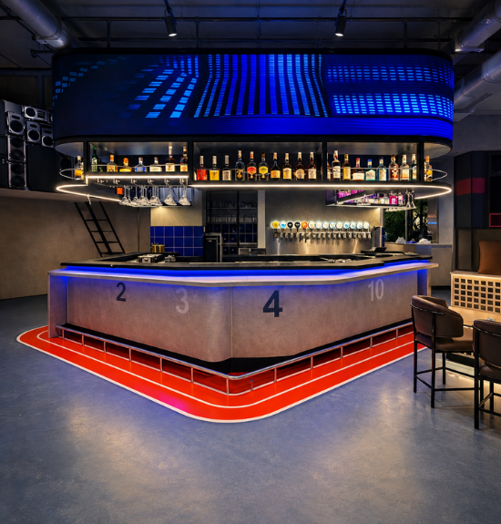
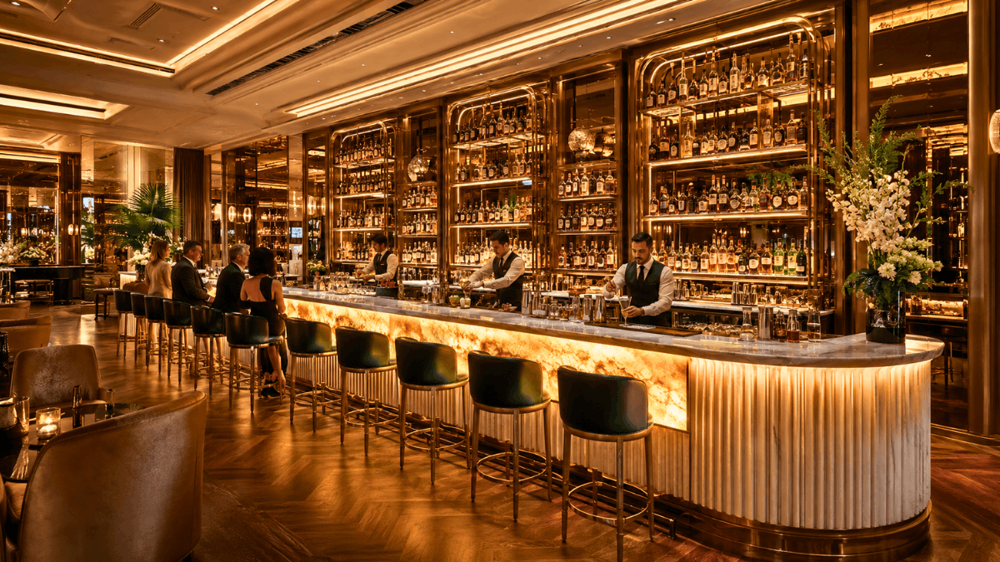
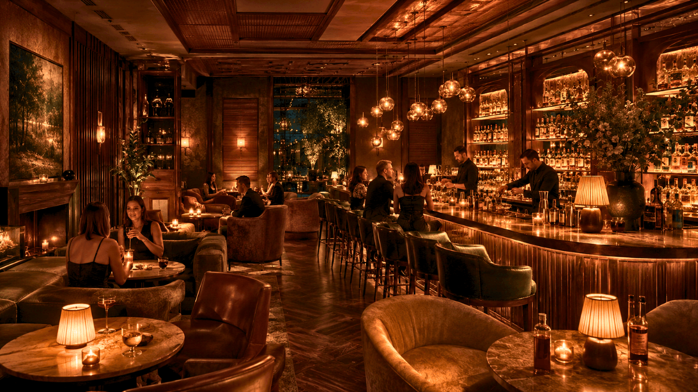
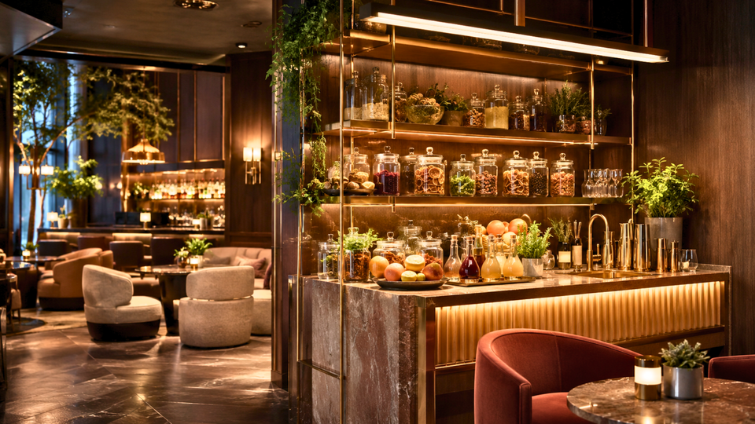
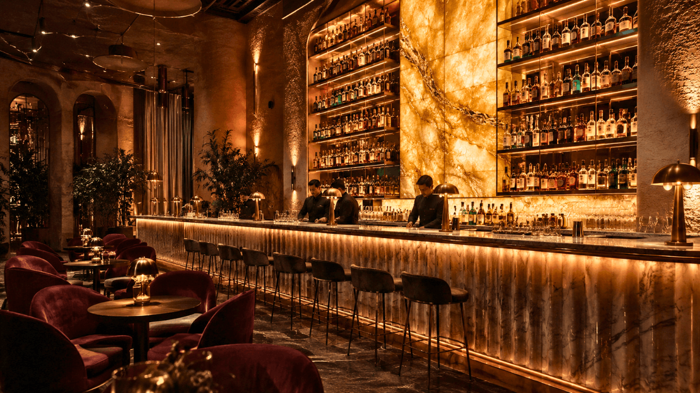
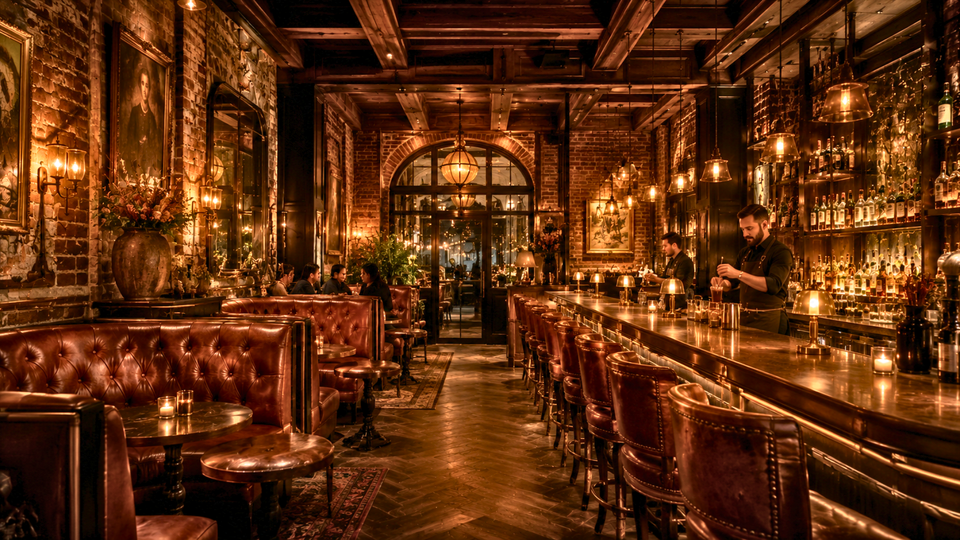

By SprintCo | Restaurant Design Experts
Walk into a bar that gets lighting right, and you feel it immediately, even if you can’t name it. There’s warmth. There’s depth. There’s a quality to the room that makes you want to settle in, order another round, and stay longer than you planned. Walk into one that gets it wrong, and the feeling is equally immediate, if harder to articulate. Something is off. The room feels too bright, or too flat, or strangely cold despite a full house.
Lighting is the single most powerful atmospheric tool in a bar designer’s kit. It shapes how guests feel, how long they stay, how flattering they look in photos, and whether they come back. Yet it remains one of the most commonly underfunded and underplanned elements in a bar fit-out.
At SprintCo, we’ve designed bars across every format and price point. This guide covers what actually works and what doesn’t when it comes to lighting booths, high tops, and the broader bar atmosphere.

Why Bar Lighting Is Different from Restaurant Lighting
Before getting into specifics, it’s worth understanding what makes bar lighting its own discipline. Restaurants are primarily about food. Bars are primarily about people, conversation, connection, social performance, and the feeling of being somewhere worth being on a Friday night.
This changes everything about how you light a space. In a restaurant, some degree of task illumination is necessary for guests to read menus, evaluate their food, and feel comfortable in a space that might be used for lunch as well as dinner. Bars operate under a different contract. By the time a guest arrives at a cocktail lounge at 9 pm, task lighting is almost irrelevant. What matters entirely is atmosphere, and atmosphere in a bar lives at the darker, warmer end of the lighting spectrum.
The most common mistake in bar lighting is applying restaurant logic to a bar environment. The result is a space that is perfectly visible and completely uninspiring.
Booth Lighting in Bars
Booths are the most coveted seats in most bars. Guests request them specifically. They offer enclosure, privacy, and the feeling of having a space that is yours for the evening. Lighting a booth well means reinforcing all of those qualities, and the mistakes here are more common than they should be.
The Overhead Downlight Problem
Positioning a recessed downlight directly above a booth table is the most widespread booth lighting error we encounter. The logic seems sound: light the table so guests can see their drinks. The result is the opposite of intimate. Harsh top-down light creates unflattering shadows across faces under the eyes, nose, and chin and produces a quality of light that guests associate, subconsciously, with examination rooms and office break areas.
In a bar, where people want to feel attractive and at ease, this is a genuine commercial problem. Guests who feel uncomfortable, even if they cannot articulate why, choose a different venue next time.
The fix is straightforward. Remove overhead lighting from booth zones entirely, or reposition any ceiling sources to the perimeter of the booth rather than directly above the table. Replace them with wall-mounted sconces at or just below seated eye level, and wherever possible, add a small table lamp. Light that originates from the sides and slightly below the face is the most flattering light a booth can receive, warm, soft, directional, without being harsh.
Booths Should Feel Darker Than the Rest of the Bar
One of the most effective atmospheric moves in bar design is creating a noticeable drop in light level as a guest moves from the open bar floor into a booth. The booth should feel like stepping into a private world, quieter, warmer, more enclosed. When the light level in a booth matches the general floor, that transition is lost, and the booth becomes just another table with higher sides.
This is easily achieved through separate dimmer circuits for booth areas, independently controlled from the main bar floor. Operators can then calibrate the difference across the evening, perhaps subtle at 6 pm, more pronounced by 9 pm when the wider bar is fuller and noisier.
Colour Temperature in Booths
Booths finished in dark timber, deep upholstery, and rich materials are the most common and most effective booth palette in bar design, which depend on warm light to read correctly. Under a cool white source (4000K and above), even beautifully specified booth joinery looks flat and uninviting. Under a warm source in the 2200K to 2700K range, those same materials glow.
Specify warm white throughout every booth area without exception. If the rest of your bar runs at a slightly higher colour temperature for operational reasons, zone the booth lighting separately to maintain warmth where guests sit.
High Top Lighting in Bars
High tops serve a different social function than booths. They are the social seating positioned along windows, at the bar perimeter, or in the more energetic zones of the venue. Guests at high tops want to be part of the action. Lighting here needs to be flattering and atmospheric without being so dim that the seating feels out of step with the energy of the room.

Getting Pendant Height Right
Pendant lighting over high tops is one of the most effective design moves in a bar, and one of the most commonly executed poorly. The problem is almost always height. Pendants calibrated for standard dining table height (typically hung 70–75cm above the surface) are hung over high tops at the same drop, which puts the fitting directly at eye level for a seated or standing guest. The result is glare, visual obstruction, and a fitting that draws attention to itself for all the wrong reasons.
Pendants over high tops should be hung significantly higher, 90 to 100cm above the counter surface as a starting point, adjusted for the specific fitting and the ceiling height of the room. At the right height, a pendant creates a warm, defined pool of light on the surface and recedes visually for the guests sitting beneath it.
Resisting the Urge to Over-Light
There is a persistent assumption that high-energy bar areas need high light levels. This is not how atmosphere works. Energy in a bar comes from music, crowd density, and sound, not from lumens. Over-lit high top areas in a bar context make a space feel more like a canteen than a cocktail venue and actively undermine the sense of occasion that drives guests to choose one bar over another.
High tops in a well-designed bar should be lit to roughly the same atmospheric level as the rest of the venue. If the space feels too dark during setup, trust the process. Once guests arrive, the ambient warmth of the room fills in significantly. A bar that feels slightly too dim at 7 pm with ten guests will feel exactly right at 9 pm with seventy.
Activating the Vertical Surfaces
High tops are often positioned against walls, windows, or partial dividers, and operators consistently focus their lighting attention on the tabletop while ignoring everything around it. The result is a brightly lit surface floating in a dark, visually dead surround; the eye has nowhere to go beyond the drinks on the table.
Wall grazing, positioning a light source close to a textured wall surface and directing it across at a sharp angle, is one of the most effective techniques for activating vertical surfaces around high top seating. It draws out texture in brick, plaster, timber, or tile, adds depth and warmth to the surrounding zone, and gives the eye a visually rich environment rather than a lit surface in a void.
Getting the Overall Bar Atmosphere Right
Beyond the specifics of individual seating types, there are broader principles that separate bars with genuine atmosphere from those that simply have adequate lighting.

Layer Everything
Great bar lighting is never a single source doing all the work. It is a composition of ambient light for base illumination, accent lighting picking out the back bar, architectural features, or artwork, decorative sources (pendants, table lamps, candlelight) contributing mood and warmth, and task lighting kept strictly functional and strictly out of guest sightlines.
The back bar deserves particular attention. Backlit shelving that highlights your spirits selection is one of the most effective and most visible lighting decisions in a bar. It draws the eye, communicates quality, and provides a source of ambient warmth that anchors the room. The light behind bottles should be warm and consistent; uneven or cool backlighting makes a carefully curated spirits collection look like a supermarket shelf.
Candlelight and Flame
There is no artificial source that replicates the quality of candlelight, the warmth, the movement, and the intimacy it creates at the table level. Real candles in bars create a genuine atmosphere that guests respond to viscerally. High-quality LED candle alternatives have improved substantially and are a practical option where a real flame is restricted, but the warmth of the light remains secondary to the real thing.
In a cocktail lounge or upscale bar setting, candles at every table or booth are among the highest-return investments in atmosphere you can make. The cost is negligible. The effect on guest experience is significant.
The Dimmer Is Infrastructure, Not a Luxury
Every lighting circuit in a bar should be on a dimmer. This is a foundational specification, not a premium upgrade. A bar that cannot modulate its light level across the course of a service is a bar permanently locked into a compromise, either too bright for the evening crowd or too dim for the early arrivals.
Programmable scene-setting systems take this further, allowing pre-configured lighting states for different dayparts that can be activated instantly. For multi-zone bars, this kind of control is the difference between a venue that feels right at every hour and one that only really hits its stride at peak service.

Colour Temperature Consistency
Mixed colour temperatures across a bar’s guest-facing environment is a subtle but persistent problem. Warm pendants over tables alongside cool white downlights near the entrance. A warm back bar glow clashing with a cool-toned display fridge. These inconsistencies register as visual discomfort; guests won’t diagnose the problem, but they’ll feel that something doesn’t cohere.
Establish a colour temperature for most bars, between 2200K and 2700K and hold it across every source visible to guests. Back-of-house can run whatever is operationally appropriate. The guest environment should be coherent from the entrance to the back wall.
What the Street Sees Matters
First impressions in bar design begin before a guest steps through the door. A bar that glows warmly from the street, where passersby can see the amber light, the silhouettes of guests, and the warmth of an occupied room, is a bar that generates walk-in traffic without a marketing budget. Facade lighting, entrance illumination, and the visibility of the interior from outside are all part of the atmospheric brief and are routinely neglected in fit-out planning.
A well-lit exterior doesn’t mean a bright exterior. It means a considered one warm, inviting, legible from the street, and consistent with the atmosphere inside.

The SprintCo Perspective
Lighting design in bars is one of the areas where SprintCo consistently adds the most value to a project. Not because it’s technically complex, though it requires genuine expertise, but because it is so frequently deprioritised by the time budget and attention are being allocated. We’ve seen exceptional fit-outs partially undone by lighting decisions made too late and too quickly.
Our approach is to lock in a lighting strategy alongside the spatial and materials brief, not after it. The right light makes good materials look extraordinary. The wrong light makes extraordinary materials look ordinary. For a bar where atmosphere is the core product, that difference is the difference between a venue that builds a following and one that struggles to fill.
Working on a bar project? Talk to SprintCo before the lighting plan gets handed to the electrician.
SprintCo Restaurant & Hospitality Design | Designing spaces that guests return to.
Pan-India presence | 3500+ F&B spaces delivered — Visit SprintCo’s Website